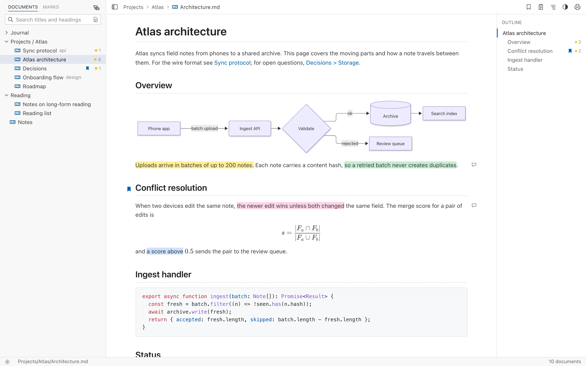
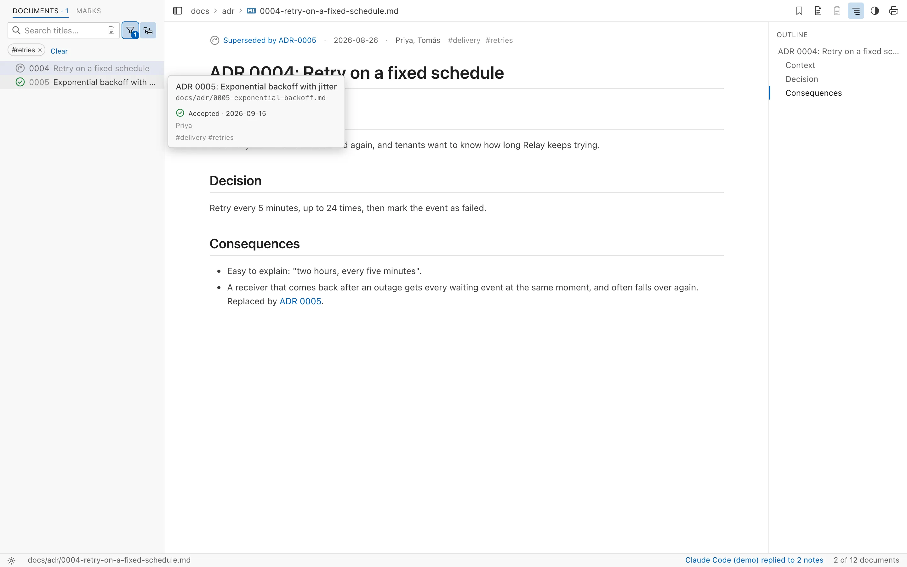
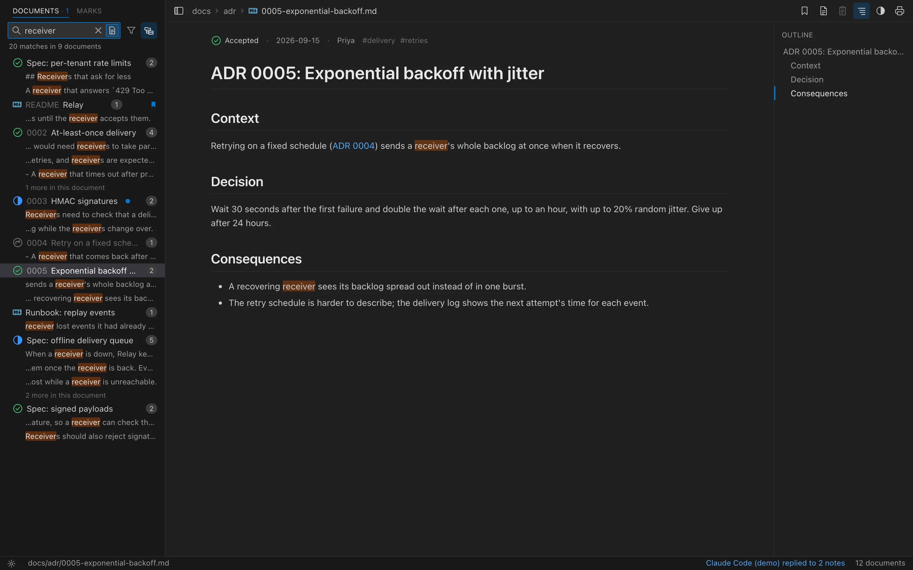
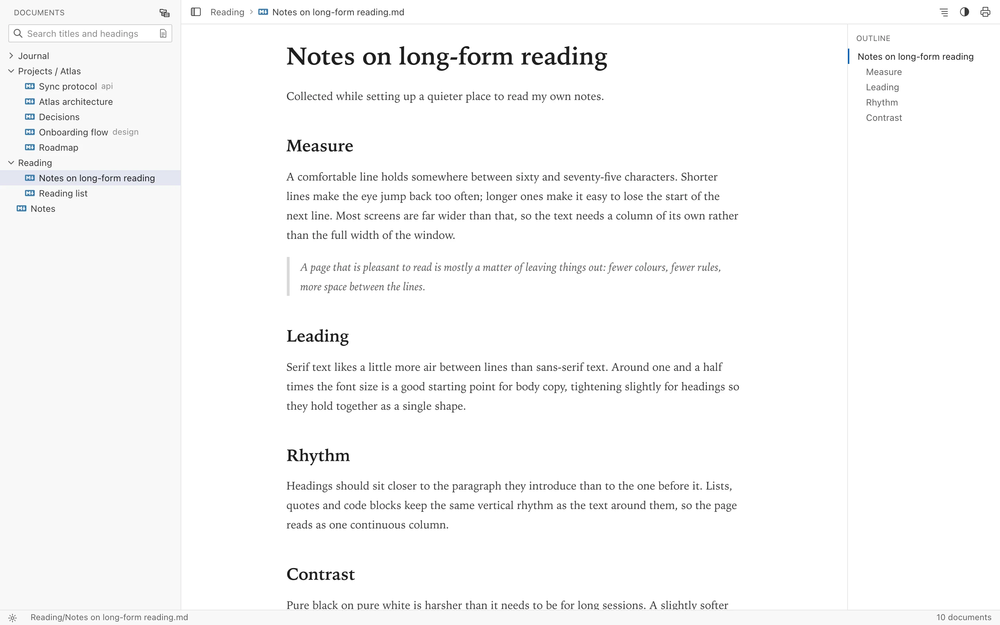
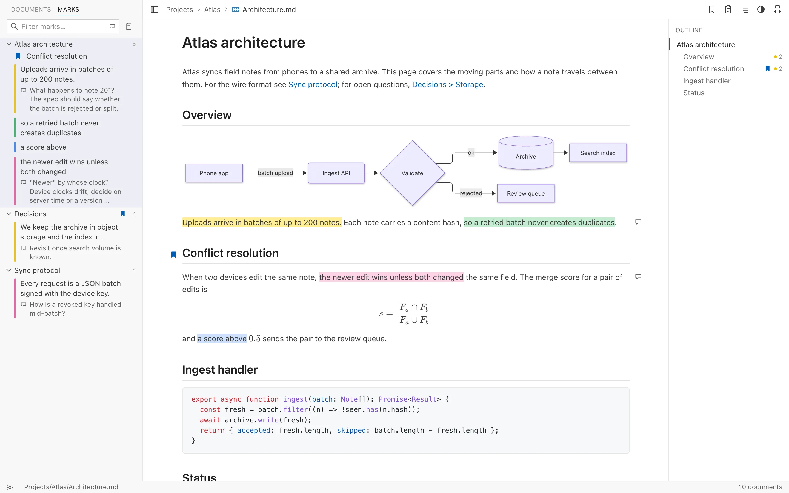

For the documents you have to read closely
Writing Markdown got cheap: coding agents draft a spec or a proposal in minutes. Reading it carefully didn't. Folio is built for that part.
- Specs and design proposals
- Open a project's docs folder and read the whole set with an outline, diagrams and code, then mark what needs another pass.
- Architecture decision records
- See which decisions are accepted, proposed or superseded, and find the one you half remember with search across titles, headings and full text.
- Research and AI-written reports
- Highlight claims, note your doubts beside them, and find every note again in one list.
- Notes and Obsidian vaults
- Wiki links, embeds and front matter work as they do in Obsidian, in a calm reader.
Every file, in its place
Point Folio at a folder and it lists every Markdown file inside, including sub-folders, grouped the way you filed them. Edits you make in any other app show up straight away.
- Folders stay tidy. Chains like api / v2 merge into one row, and numbered files such as
0015-hmac.mdshow their number before the title. - An outline beside each page marks the section you're reading and jumps to any heading.
- Links between notes work. Click through, and Back returns you to where you were.
- Focus on one folder when a repo holds more than you're reviewing: the list and search narrow to it.

Know where each decision stands
Folio reads a document's status, date, decision makers and tags
from its front matter, or from the Status: line ADR
templates write, and shows them in the list and above the page.
- Status at a glance. Accepted, proposed and superseded documents each get their own icon, and retired ones are dimmed.
- Filter by status and tag to see only what's still proposed, or every decision about retries.
- Follow the history. "Superseded by ADR-0005" links to the decision that replaced it.
- Give your verdict. A note on the whole document can ask for it to be accepted or rejected, and leads its review notes, so the agent that wrote it makes the change.

Find the line you half remember
Search titles and headings as you type, and a matching heading opens the document at that section. Switch to full-text search to see every matching line under its document, highlighted where it appears.
- Full-text search with ⇧⌘F or Ctrl+Shift+F
- Find in the open page with ⌘F or Ctrl+F, with a running match count

Set the page the way you like to read
Choose a light or dark theme, or follow your system. The Book style sets text in a serif with room to breathe; Compact fits more on screen. Reading width and font size are one click away, and your choices apply when you print or save a PDF too.
- Your own CSS on top of any style, reloaded as you save it
- Fits a narrow window. The document list and outline slide in as drawers, so the live demo reads well on a phone.

Mark it up as you read
Highlight a passage in one of four colours, write a note beside it, or bookmark the section you'll come back to. Marks live in Folio's own folder, never in your documents, and follow the text when a file is edited, moved or renamed.
- Every mark in one place. The Marks view lists the highlights, notes and bookmarks of the whole workspace, with a filter.
- Hand your notes to a coding agent. Copy a document's highlights and notes, and your verdict on the whole document, as Markdown with file paths and line numbers, ready for Claude Code or Cursor.
- Highlight with ⇧⌘H, bookmark with ⌘D, copy notes with ⇧⌘C

Renders what you actually write
Folio reads the Markdown found in real notes and docs, not just the basics. Nothing to install or switch on.
- GitHub-flavoured Markdown
- Tables, task lists, strikethrough and autolinks.
- Obsidian vaults
[[Note]]links, aliases, links to headings and![[image.png]]embeds. Front matter is hidden, and its title names the page.- Mermaid diagrams
- Drawn to match your theme. Open any diagram in the full window to zoom and pan.
- Math
- Inline
$…$and display$$…$$formulas, typeset with KaTeX. - Code
- Syntax highlighting for common languages, and a copy button on every block.
- Images and attachments
- Images from your folder or the web. Linked PDFs, spreadsheets and other files open in their own apps.
Made for the keyboard
| ↑ ↓ ← → Enter | Move through the document list, open and close folders |
|---|---|
| ⌘B / Ctrl+B | Show or hide the sidebar |
| ⌘F / Ctrl+F | Find in the open document |
| ⇧⌘F / Ctrl+Shift+F | Search the text of every document |
| ⇧⌘H / Ctrl+Shift+H | Highlight the selection in the last colour |
| ⌘D / Ctrl+D | Bookmark the open document |
| ⇧⌘C / Ctrl+Shift+C | Copy the open document's review notes |
| ⌘, / Ctrl+, | Open settings |